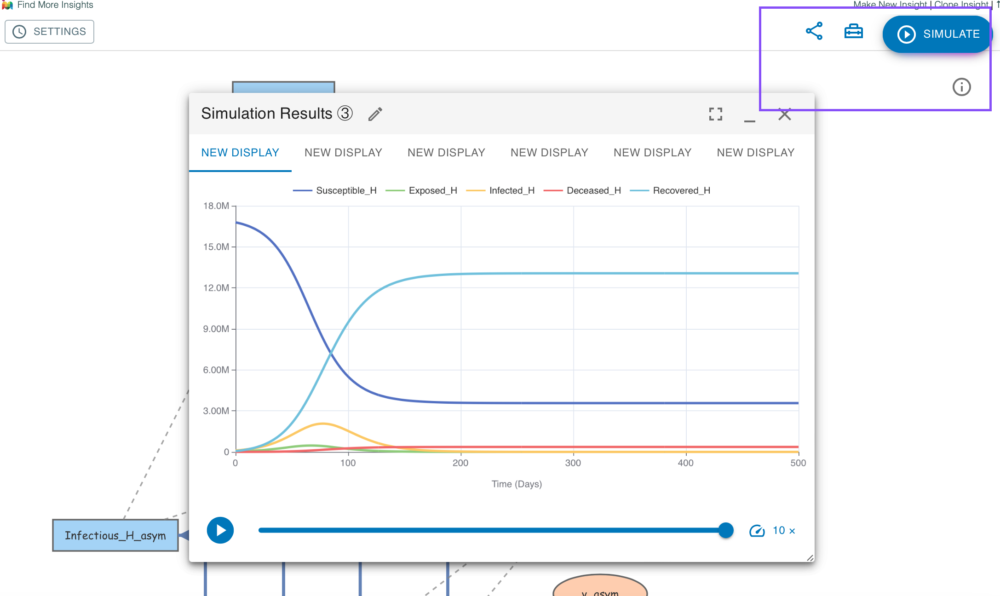

| Link | Description |
|---|---|
| Benchmark Model | This is our benchmark model in which no measures are taken to control the spread of the virus. |
| Uniform Social Measure (USM) | This is the common model where all groups are subjected to the same social distancing measures. |
| Group-specific Measure (GSM) | This is the model capable of simulating and evaluating the case where there are group-specific measures to protect a vulnerable population. |
check the simulation outcome simply by clicking on the "SIMULATE" button on the top right corner
